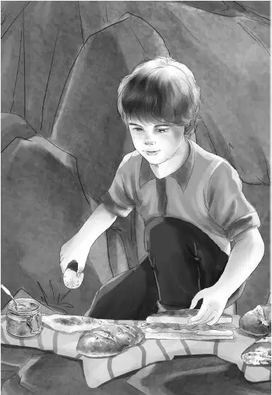

“Couldn’t we go up that ladder，” asked Benny，“and look in the hole？”
“Not yet，young man，” said Dr. Osgood. He pushed up his glasses.“We don’t want any more accidents. When we get the staging done，it will be safe for any of you to get up to the cave.”
Mr. Alden said，“Percy，the old Indian woman Lovan told us that her great-grandfather hid that leather bag in a cave. Now suppose this was the cave. Would that be near this door or near the opening in the other side，do you think？”
“I should say he crawled in and hid it as far back as he could，” said Dr. Osgood.
Benny said，“That would mean the leather bag could be right under our noses！I hope they will get that staging done fast. I can hardly wait！Can you，Mr. Carter？”
Mr. Carter said，“No，I can hardly wait，either. But right now I am hungry. Aren’t you all hungry？”
“Always！” said Henry and Jessie together.
“Well，then，how about a bit of lunch？” said John Carter.“You’ve had a three-hour climb，and we all need food. And you should see the lunch！”
“Oh，we’ll never eat all this food！” Jessie said as she watched the lunch being unpacked.
“Don’t forget，it is for the workmen，too，” said Dr. Osgood.“And me！”
Then Henry noticed that Benny was sitting still and saying nothing.
“What’s the matter，Ben？”
“Well，I simply can’t decide which sandwiches I like best！” said Benny.“I like them all best.”
“Shut your eyes and point，then，”said Mr. Carter.
Benny did so. He was pointing at the cheeseburgers.
“That’s exactly what I do like best，really！” he cried. “Cheeseburgers！”
“I thought you didn’t know，” laughed Violet.
“Yes，I thought so，too，” said Benny.“And I just love to dunk hard-boiled eggs！” He opened his salt and pepper and “dunked” his egg in the salt as he spoke. Then he bit off a huge bite.
“Delicious！” he said.
Everyone agreed. The piles of sandwiches went down very fast. But there were plenty for the workmen when Mr. Alden called them to lunch. When the workmen sat down，the Alden family waited on them. Henry gave them hot coffee. Violet passed the pickles. Mr. Carter got out the cold drinks. Jessie gave each one an egg and salt. Benny sat down with them and had another sandwich. He said，“You haven’t really got very far on the staging，have you？”

“No，” said the head man.“It takes three days. You see a staging must not fall. And it has to rest somewhere. It takes time to make a place to hold it.”
“Don’t you keep wishing that you could take time off and look in the cave？” asked Benny.
“Yes，” said a man.“But if we do，the staging has to wait，and it takes that much longer to finish it. Dr. Percy has had a look. That’s enough for me. He thinks it is worth while，so I’m not wasting my time.”
Henry said to Dr. Osgood，“What do you think could be in the lost bag？A French nobleman expected to sell whatever it was for enough money to live here. So it must be worth something.”
“It could be jewelry，” said Dr. Osgood.“French noblemen often had to sell jewels to keep alive. It could be gold coins or silver. It could be silver candlesticks or vases or mirrors or spoons. I don’t know.”
“I know you，Percy！” said Mr. Alden.“You’re not really interested in that leather bag，are you？”
“Well，no，not much，” said Dr. Osgood.“I always hope to find something important in a cave.”
“What could be more important than Lovan’s tressure？” cried Benny.
“Well，you’re right，boy，if you are thinking mostly of Lovan. But for the whole country，stones could be more important. They are to me.” He threw his head back and tried not to laugh.
Grandfather shook his finger at his old friend. “You’re up to something，Percy！Have you found something already？”
“I suppose I shall have to show it to you，” said Dr. Osgood.“At first I thought I’d put it back and let Benny find it. But Benny wouldn’t like that if he found it out.”
“No，I wouldn’t，” said Benny.
“Here it is，” said Dr. Osgood. He took a flat stone out of the biggest pocket of his overalls. It was about six inches long. He gave it to Henry，not Benny. “Take care！” he said.
“A fossil，” said Henry. He took the stone carefully in both hands. It was one flat stone，but it was split down the middle.
“Take off the cover，” said Dr. Osgood.“Careful now！”
Henry lifted the top half and they all bent over to look.
“A little fish！” cried Benny.
“Yes，a fossil fish，” said Dr. Osgood.“It is millions of years old.”
“What kind of a fish？” asked Benny. He was sure Dr. Osgood knew everything.
“I don’t know，” said Dr. Osgood.“You may be sure that many people will study this fossil. See the backbone？Every little bone shows on both halves.”
“Does that mean that once this mountain top was under water？” asked Jessie.
“Yes，” said Dr. Osgood，nodding，“and this is the proof. I’d rather find this than ten leather bags.”
Dr. Osgood said，“And now you’ll be surprised to hear this. I think you had better start down the mountain. The weather doesn’t look too fine to me.”
“It looks beautiful to me，” said Benny，looking at the deep blue sky.“But of course you would be right. Are you coming，too？”
“No，I’ll stay. I’ll keep my head man and we’ll come down later in the helicopter.”
Jessie did not have to be told twice. She was already packing the things.
Three hours later they reached the store. They all went in，and Mr. Carter said to the ranger，“Did you see the Indian boy this morning in the crowd？”
“Yes，he is new around here. Before I had time to talk to him，he had gone.”
“Gone！” cried everyone.
“Yes，gone. And what’s more，he’s still gone. Nobody around here ever saw him before. And nobody knew how he got here.”
“That’s very funny，” said Henry.“I should think somebody would have spoken to him. There was such a crowd. Would you guess he was up to no good？”
“Well，” said the ranger. He stopped. Then he went on，“We know nothing about him. He may be lost and need help. That’s really why we’re going to find him， come what may.”